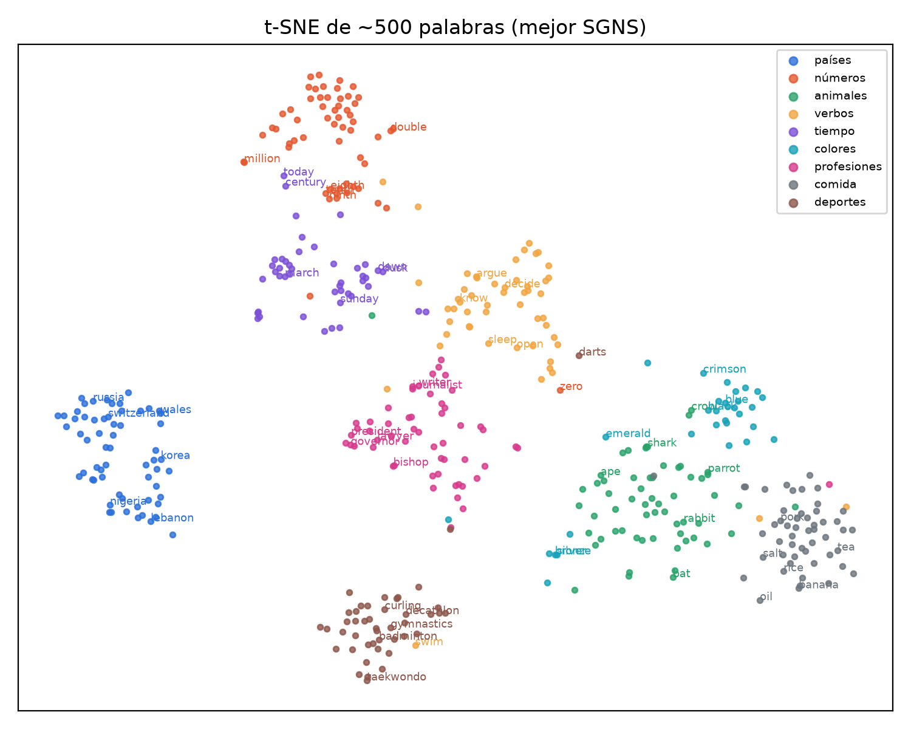
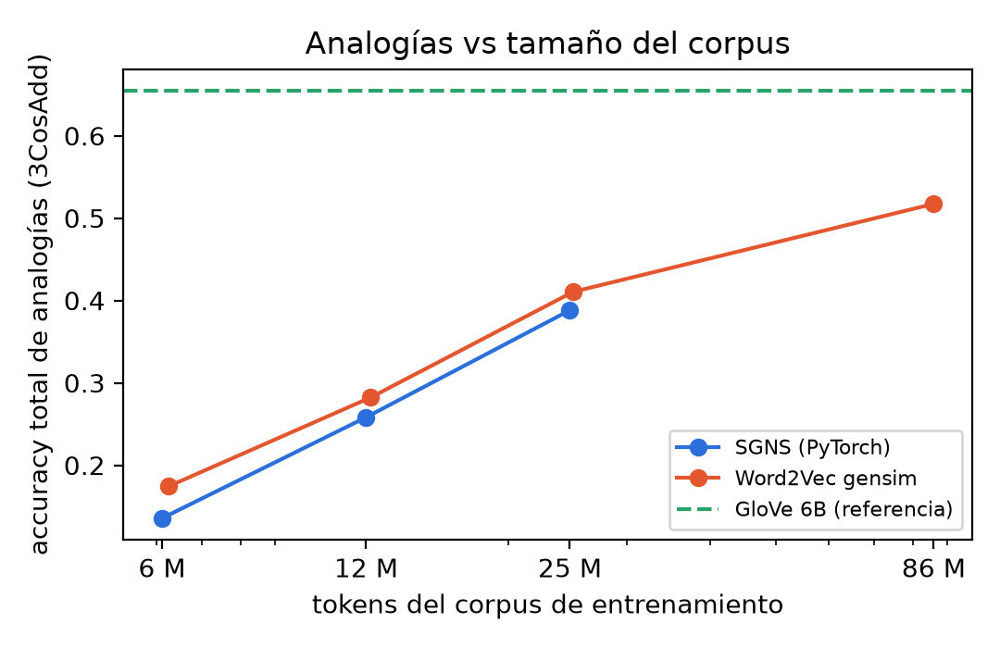
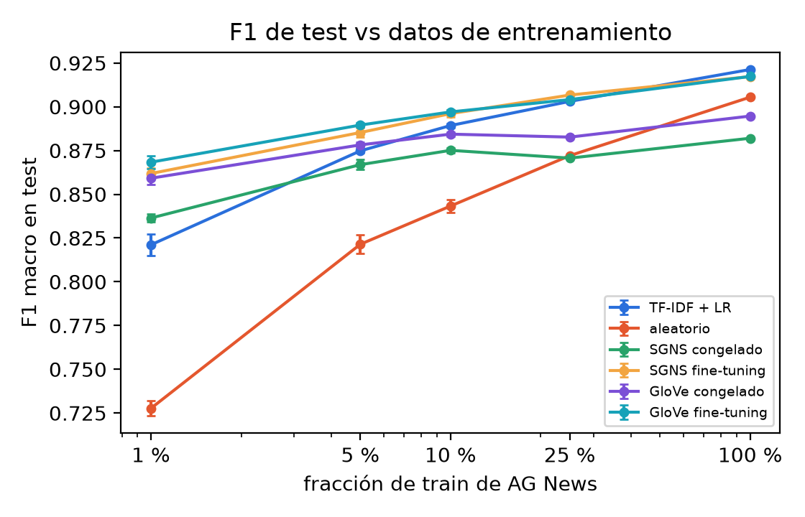
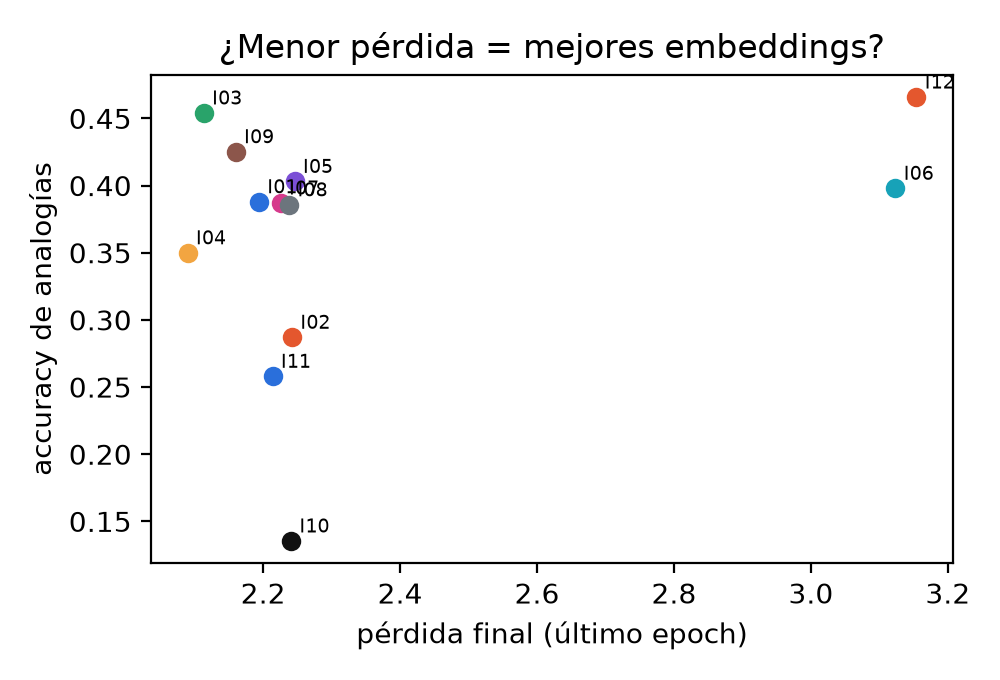

nn.Embedding(num_embeddings, embedding_dim, padding_idx, sparse) es una tabla |V|×d: el ID del token selecciona una fila
(equivale a one-hot × matriz, pero indexando). padding_idx fija una fila que nunca recibe gradiente (lo verificamos en el
notebook) y sparse=True produce gradientes solo para las filas usadas, lo que permite SparseAdam con vocabularios
grandes. nn.Embedding.from_pretrained(weights, freeze) carga vectores ya entrenados: freeze=True los deja fijos y
False permite fine-tuning. nn.EmbeddingBag(mode) busca y agrega en un paso los vectores de cada documento
(mean, sum o max) a partir de un tensor 1D concatenado y de offsets, que marcan dónde empieza
cada documento; evita el padding. En gensim, Word2Vec (sg, vector_size, window,
negative, sample, min_count, epochs) entrena en C multihilo y KeyedVectors consulta
(most_similar, evaluate_word_pairs).
CBOW predice la palabra central desde el promedio del contexto (rápido, favorece palabras frecuentes); skip-gram predice cada palabra del contexto desde la central (más pares por token, mejor con palabras raras). Word2Vec usa dos matrices: W (palabra como central) y W′ (palabra como contexto). Así una palabra no necesita ser similar a sí misma, y se conserva W. Word2Vec es predictivo (SGD sobre ventanas locales); GloVe es de conteo: ajusta wi·w̃j + bi + b̃j ≈ log Xij sobre la matriz global de co-ocurrencias, con pesos f(Xij).
WikiText-103 (train): 29 444 artículos, 1 801 350 líneas y 101,4 M tokens crudos (85,9 M tras normalizar). Entrenamos con los primeros 8 802 artículos: 25,0 M tokens y 251 800 líneas. AG News: 108 000 / 12 000 (validación estratificada al 10 %) / 7 600 (test oficial, usado una sola vez por inicialización).
| Decisión | Elección y motivo |
|---|---|
| Normalización | Minúsculas (GloVe 6B está en minúsculas); se quitan títulos = … = y la puntuación; @,@/@.@ reconstruyen
20,000 y 3.5 (GloVe guarda números); @-@ separa compuestos; contracciones estilo Treebank (is + n't, army + 's), igual que el tokenizador de Stanford usado por GloVe. Sin tokens inventados (<num>), que no existen en GloVe y bajarían la cobertura. |
| Tokenizador | Regex propia vs NLTK Treebank en 12 oraciones: coinciden en contracciones (do/n't); difieren en guiones (well-known unido en NLTK), abreviaturas (dr. vs dr), alfanuméricos (1990s, q3 se parten en los nuestros), puntuación y símbolos ($, %, URLs, que NLTK conserva y nosotros descartamos). |
| Zipf | Recta en log-log con pendiente −1,06 (≈ −1): sí se cumple. Las top 10 / 1 000 / 30 000 palabras cubren el 24,3 / 64,5 / 95,8 % de los tokens. |
| Vocabulario | min_count 1 / 5 / 10 / 20 → 271 737 / 90 566 / 61 449 / 41 805 palabras y 0 / 1,18 / 1,94 / 3,01 % de tokens desconocidos. Elegimos 5. |
| Subsampling | keep = (√(f/t)+1)·t/f con t = 10⁻⁴: se descarta el 96,2 % de «the», el 94,1 % de «of» y el 93,8 % de «and» (medido: 96,2 / 94,2 / 93,7 %); «king» pierde el 25 % y «computer», el 0 %. Ayuda porque esos pares no aportan información, acelera el entrenamiento y amplía la ventana efectiva. |
| Pares por epoch | Ventana 5 sin cruzar líneas: 239,6 M pares (24,7 M tokens) → 141,3 M con subsampling (14,9 M tokens); con la ventana dinámica de word2vec, 85,7 M. |
Implementación propia: dos nn.Embedding(sparse=True) (entrada inicializada en ±0,5/d y salida en cero), pérdida
−log σ(uo·vc) − Σ log σ(−uk·vc), negativos de unigrama0,75, pares generados en GPU en cada epoch
(subsampling nuevo, ventana dinámica), SparseAdam con lr lineal decreciente y lotes de 8 192 pares. Se evalúa al final de cada epoch
(analogías en el top 30 000 y WordSim-353); SimLex queda reservado. GPU: RTX 4050 Laptop (6 GB). Base: d = 100, ventana 5, 5 negativos,
t = 10⁻⁴, min_count 5, lr 2·10⁻³, 5 epochs, 24,7 M tokens.
| ID | Cambio respecto a la base | Tokens | Vocab. | Pérdida | Sem. | Sint. | Total | WS-353 ρ | s/epoch | GPU MB |
|---|---|---|---|---|---|---|---|---|---|---|
| I01 | base | 24,7 M | 90 566 | 2,19 | 27,6 | 43,5 | 38,8 | 0,648 | 31 | 1 546 |
| I02 | d = 50 | 24,7 M | 90 566 | 2,24 | 19,4 | 32,6 | 28,7 | 0,613 | 29 | 1 431 |
| I03 | d = 300 | 24,7 M | 90 566 | 2,11 | 39,1 | 48,1 | 45,4 | 0,681 | 150 | 2 005 |
| I04 | ventana 2 | 24,7 M | 90 566 | 2,09 | 22,0 | 40,5 | 35,0 | 0,600 | 23 | 1 306 |
| I05 | ventana 10 | 24,7 M | 90 566 | 2,25 | 32,5 | 43,6 | 40,3 | 0,674 | 52 | 1 926 |
| I06 | 15 negativos | 24,7 M | 90 566 | 3,12 | 32,3 | 43,0 | 39,8 | 0,653 | 63 | 1 578 |
| I07 | t = 10⁻³ | 24,7 M | 90 566 | 2,23 | 27,3 | 43,5 | 38,7 | 0,649 | 37 | 1 615 |
| I08 | min_count 20 | 24,2 M | 41 805 | 2,24 | 28,3 | 42,9 | 38,6 | 0,658 | 26 | 1 416 |
| I09 | lr 5·10⁻³ | 24,7 M | 90 566 | 2,16 | 36,4 | 45,1 | 42,5 | 0,661 | 29 | 1 547 |
| I10 | corpus 25 % | 6,1 M | 43 162 | 2,24 | 9,2 | 15,5 | 13,6 | 0,545 | 6 | 961 |
| I11 | corpus 50 % | 12,3 M | 62 918 | 2,21 | 18,3 | 29,3 | 25,8 | 0,617 | 14 | 1 165 |
| I12 | ventana 10 + 15 neg. + lr 5·10⁻³, 8 epochs | 24,7 M | 90 566 | 3,15 | 47,2 | 46,3 | 46,6 | 0,665 | 154 | 1 959 |
Analogías en %, con 3CosAdd. Mejor modelo de d = 100 (para compararlo con GloVe-100): I12, con 1 234 s de entrenamiento en total. ¿Una pérdida más baja implica mejores embeddings? No: I04 tiene la pérdida más baja (2,09) y analogías peores que la base; I12 tiene la más alta (3,15) y es el mejor. La pérdida mide una tarea que cambia con la ventana y el número de negativos, no la calidad del espacio. Los vecinos de control son coherentes desde el epoch 1 (france → italy, spain; january → february, december) y se afinan con los epochs.
analogia(a, b, c, k) (3CosAdd sobre vectores normalizados, excluyendo a, b y c) devuelve el mismo top-5 que most_similar de
gensim en las 18 analogías y los tres modelos. También verificamos nuestro 3CosMul contra most_similar_cosmul: 66,25 % en ambos sobre 400 preguntas.
| Tipo (3 analogías c/u) | Ejemplo (SGNS) | SGNS | gensim | GloVe |
|---|---|---|---|---|
| Género | man:woman :: king:queen (0,715), rango 1 | 3/3 | 1/3 | 3/3 |
| País–capital | france:paris :: italy:? → vienna; rome en el rango 4 (0,645) | 1/3 | 2/3 | 2/3 |
| País–gentilicio | france:french :: germany:german (0,868) | 3/3 | 3/3 | 3/3 |
| Comparativo/superlativo | good:better :: bad:worse; strongest en el rango 2 | 2/3 | 1/3 | 2/3 |
| Tiempo verbal | walk:walked :: run:ran; go:went :: see:? → came | 2/3 | 3/3 | 2/3 |
| Plural | car:cars :: child:children (0,721) | 3/3 | 3/3 | 3/3 |
| Total · 1.º puesto sin excluir a, b, c (palabra de la consulta) | 14/18 · 14/18 | 13/18 · 15/18 | 15/18 · 7/18 | |
Sin excluir las palabras de la consulta, la primera suele ser c o b (king, sister, prince, run…): b − a + c sigue más cerca de c que de la respuesta, cuyo coseno con el vector resultado queda entre 0,55 y 0,87 en SGNS. Evaluación sistemática con el vocabulario compartido (las 30 000 palabras más frecuentes de WikiText presentes en los tres modelos): cobertura de 11 892 / 19 544 preguntas (60,8 %), las mismas para los tres.
| Categoría (3CosAdd, %) | SGNS | gensim | GloVe | Paralelismo SGNS | Paralelismo GloVe |
|---|---|---|---|---|---|
| capital-common-countries | 69 | 68 | 94 | 0,30 | 0,58 |
| capital-world | 59 | 58 | 89 | 0,23 | 0,57 |
| currency | 0 | 0 | 5 | 0,21 | 0,27 |
| city-in-state | 36 | 33 | 31 | 0,17 | 0,34 |
| family | 48 | 45 | 88 | 0,23 | 0,51 |
| adjective-to-adverb | 14 | 11 | 28 | 0,09 | 0,27 |
| opposite | 10 | 11 | 27 | 0,11 | 0,23 |
| comparative / superlative | 45 / 25 | 42 / 21 | 80 / 61 | 0,25 / 0,24 | 0,42 / 0,47 |
| present-participle / past-tense | 39 / 61 | 36 / 54 | 72 / 59 | 0,10 / 0,17 | 0,32 / 0,29 |
| nationality-adjective | 84 | 85 | 97 | 0,41 | 0,75 |
| plural / plural-verbs | 51 / 28 | 46 / 29 | 79 / 58 | 0,15 / 0,20 | 0,32 / 0,36 |
| Semánticas (add / mul) | 47,2 / 43,9 | 45,3 / 41,5 | 61,2 / 58,7 | 0,20 | 0,41 |
| Sintácticas (add / mul) | 46,4 / 42,6 | 43,5 / 39,8 | 68,3 / 66,9 | ||
| Total (add / mul) | 46,7 / 43,0 | 44,0 / 40,3 | 66,2 / 64,5 |
El desglose por categoría con 3CosMul está en el notebook; 3CosMul quedó unos 3 puntos por debajo de 3CosAdd en los tres modelos. Paralelismo (sección 5.3): coseno promedio entre los vectores diferencia b − a de los pares de una misma relación; 1 indicaría flechas paralelas. t-SNE de 457 palabras en 9 grupos con el mejor SGNS: se forman los grupos esperados (países, números, meses y días, deportes, comida, animales, profesiones, colores y verbos), con silhouette de 0,49 en 2D y 0,19 en el espacio original (coseno). Solo algunos colores metálicos (silver, bronze, golden) caen junto a los animales.


Mismo normalize y tokenizador de la sección 2. Vocabulario del clasificador: 43 299 palabras de train con frecuencia ≥ 2 (las filas ausentes en el embedding
se inicializan al azar). Tokens de AG News fuera del vocabulario: SGNS 3,0 %, gensim 3,0 % y GloVe 0,7 %. Adam con lr 10⁻³, lotes de 256, ≤ 10 epochs y
early stopping por F1 de validación. Baseline: TF-IDF de uni- y bigramas (422 568 rasgos) + regresión logística.
| Modelo (validación) | Acc. | Prec. | Recall | F1 | Parámetros | Entrenables | Tiempo | F1 test |
|---|---|---|---|---|---|---|---|---|
| TF-IDF + LR | 92,64 | 92,62 | 92,64 | 92,62 | 1 690 276 | 1 690 276 | 41 s | 92,13 |
| Aleatorio | 91,35 | 91,35 | 91,35 | 91,34 | 4 343 344 | 4 343 344 | 8,6 s | 90,69 |
| SGNS congelado | 88,26 | 88,30 | 88,26 | 88,26 | 4 343 344 | 13 444 | 3,7 s | – |
| SGNS fine-tuning | 92,44 | 92,44 | 92,44 | 92,43 | 4 343 344 | 4 343 344 | 4,7 s | 91,72 |
| gensim congelado / FT | 87,92 / 92,44 | 87,98 / 92,44 | 87,93 / 92,44 | 87,92 / 92,43 | 4 343 344 | 13 444 / 4,3 M | 2,6 / 4,9 s | – / 91,62 |
| GloVe congelado | 90,29 | 90,30 | 90,29 | 90,29 | 4 343 344 | 13 444 | 3,7 s | – |
| GloVe fine-tuning | 92,47 | 92,48 | 92,47 | 92,46 | 4 343 344 | 4 343 344 | 6,8 s | 91,73 |
La mejor variante de cada inicialización (fine-tuning en los tres casos) se evaluó una sola vez en test. En las matrices de confusión el error dominante es Business ↔ Sci/Tech (noticias de empresas tecnológicas); Sports es casi perfecta. Spearman en SimLex-999: SGNS 0,279, gensim 0,290 y GloVe 0,298, bajos en los tres porque los embeddings por co-ocurrencia capturan relación, no similitud estricta (los antónimos quedan cerca).
| SGNS propio (I12) | Word2Vec gensim | GloVe 6B | |
|---|---|---|---|
| Tokens del corpus · vocabulario · dimensión | 24,7 M · 90 566 · 100 | 25,0 M · 90 566 · 100 | 6 000 M · 400 000 · 100 |
| Tiempo y hardware | 1 234 s (8 epochs), RTX 4050 Laptop, 2,0 GB de pico | 734 s (8 epochs), CPU de 16 hilos | ~85 min para X (1 hilo) + 50 iteraciones; Xeon E5-2658 dual a 2,1 GHz, 32 núcleos |
| Analogías 3CosAdd: sem. / sint. / total | 47,2 / 46,4 / 46,7 | 45,3 / 43,5 / 44,0 | 61,2 / 68,3 / 66,2 |
| Analogías 3CosMul: sem. / sint. / total | 43,9 / 42,6 / 43,0 | 41,5 / 39,8 / 40,3 | 58,7 / 66,9 / 64,5 |
| Spearman WordSim-353 · SimLex-999 | 0,665 · 0,279 | 0,660 · 0,290 | 0,533 · 0,298 |
| Coseno promedio entre vectores diferencia | 0,204 | 0,198 | 0,406 |
| OOV en AG News · F1 de test | 3,0 % · 91,72 | 3,0 % · 91,62 | 0,7 % · 91,73 |


Referencias: Mikolov et al. (2013), Distributed Representations of Words and Phrases and their Compositionality, NeurIPS. Pennington, Socher y Manning (2014), GloVe: Global Vectors for Word Representation, EMNLP. Levy y Goldberg (2014), Linguistic Regularities in Sparse and Explicit Word Representations, CoNLL (3CosMul). Merity et al. (2016), Pointer Sentinel Mixture Models (WikiText-103).
results/vectors/best_sgns.kv